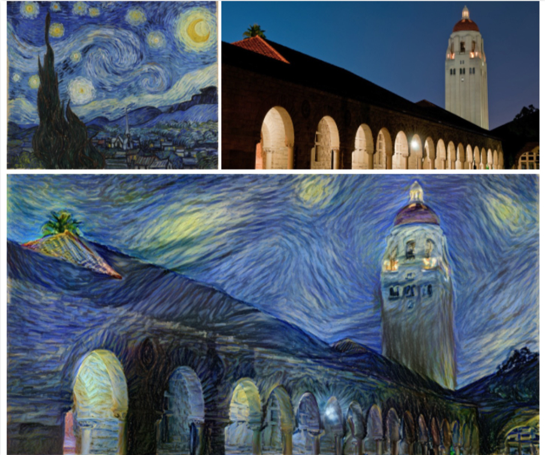
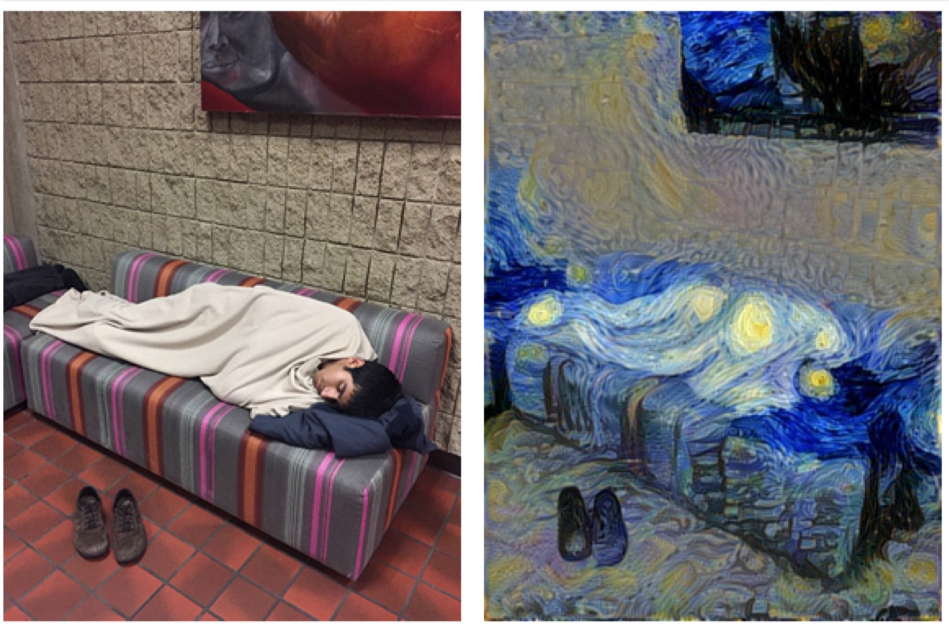
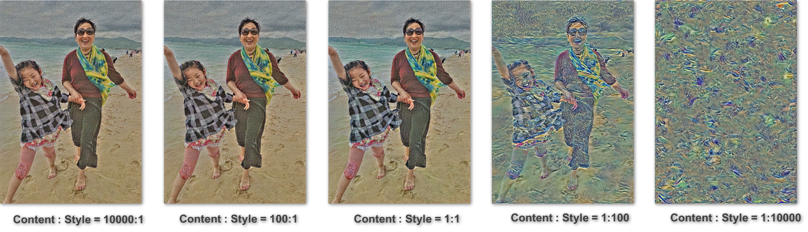

Image style transfer is a topic that receives increasing research and application interests during these years. The term image style transfer, or alternatively image stylization, refers to the image processing task that extracts the feature of style of a set of images, and apply such style onto another set of images.
There has been many implementations of image style transfer. One good example is transferring the style of an oil painting to a photograph, as shown below:
Although this kind of style transfer operation has achieved good performance when the to-be-stylized images are landscape photographs, it sometimes meet limitations when the photographs contain other elements, for example, a photo that contains a portrait. The next figure shows an example of undesired style transfer result:
The original photo is a man laying on a couch, and is transferred into The Starry Night style. However, the man’s figure becomes strange and unobvious after the style transfer. It is hard to tell there is a man laying in the right hide side image, if not given the original photograph. Besides, the face of this man becomes unrecognizable (replaced by a star) after the style transfer.
By noticing this issue, we come up with the idea that developing a better image style transfer method for photograph that contains both portrait and landscape. The implementation consists of two major parts, first we need to extract the portrait out of the photograph, and second, apply different style transfer on portrait and landscape separately, and later combining them together. By choosing suitable parameters, the entire photo should be stylized, with the portrait still being recognizable. The first part of our project idea focus on portrait segmentation, and the second part focus on image stylization.
Our approach contais three main steps:
Both stylization step and portrait segmentation step use Convolutional Neural Network(CNN), but not exatly the same network architecture. The details of implementations will be introduced in the next section.
We implement a style transfer tool by using a publicly distributed Convolutional Neural Network (CNN), VGG-19, which is constructed to perform object recognition. In CNN, the input is images, and at each layer, each image is represented as a set of representations, the object information is increasing explicit along the processing hierarchy.
In our approach, a style picture and a content picture are given to a pre-trained CNN, VGG-19 and corresponding representation can be generated respectively. It is worth to note that the for content image, the representation is extracted from ‘conv4_1’ and style representation is extracted from ‘conv1_1’, ‘conv2_1’, ‘conv3_1’, ‘conv4_1’ and ‘conv5_1’. Then, we start with a noise image to generate the image and use the CNN to calculate the representation of the generated image. We calculate the L2 loss function against the style representation and content representation and denote them as style loss and content loss respectively. We do the optimization on this loss function and after some time of iterations to get a image that can either contain the maintain the content information and be stylized with specific image.
The potrait segmentation tool we implemented is a fully convolutional network (FCN) from Long et al. (2015). This FCN does dense prediction on each pixel and predicts the its probability of being part of the portrait. As shown in Fig. 4, the images used for training are all masked with correct portrait masks. The imput image will be processed and a heatmap will be outputed. In the heatmap, a value is assigned to each pixel, which represents the how likely it belongs to the potrait. Note that the heatmap is not normalized so that the summation of all predicted values may be larger than one.
The training data included ~2700 labeled images which may contain one or more portrait objects. As for multiple objects in one image, they will be treated equally and we are not going to distinguish individual object from the rest.
Firstly, we show how the number of iterations affects the stylization result, when the iteration count is from 0 to 200, 20 per frame. We can see that, initially, the output image is just random noise. When the number of iteration is increasing, the content of the image becomes more and more obvious, and the image becomes more and more stylized.
The output at 200 epoches nicely explains our motivation: in the stylized photo, the portrait shows a strange, orange color. The details of portrait get lost, and the guy in the photo is not handsome! On the other hand, we really like this stylized background. So putting the original portrait into the stylized background is really a good solution!
Below we show a set of images with different ratios between content weight and style weight. We can see that, when the content to style ratio is larger or equal to 1:1, there is really not too much difference between the output iamges.
The original photo is Yusong (one of our teammates) standing in front of a bookshelf. This is not a task that can be easily segmented, since the photo is taken by iPhone, which means it has a large DOF; also the colors of the portrait is not apparently different from the background. We believe it is fair to use this photo as an example to show the perfermance of our portrait segmentation model, on an average case.
The training epoch has a significant effect on the segmentation performance. When the number of training epoch is small, the generated mask has lot of areas that not actually belongs to the portrait. But when we use 100,000 epoches, the model can generate a perfect mask of the portrait for the original photo.
In this section, we show sets of results that combine the segmented portrait with stylized backgound. In each set, the original photo, the chosen style and portrait mask are provided as the receipe of final output.